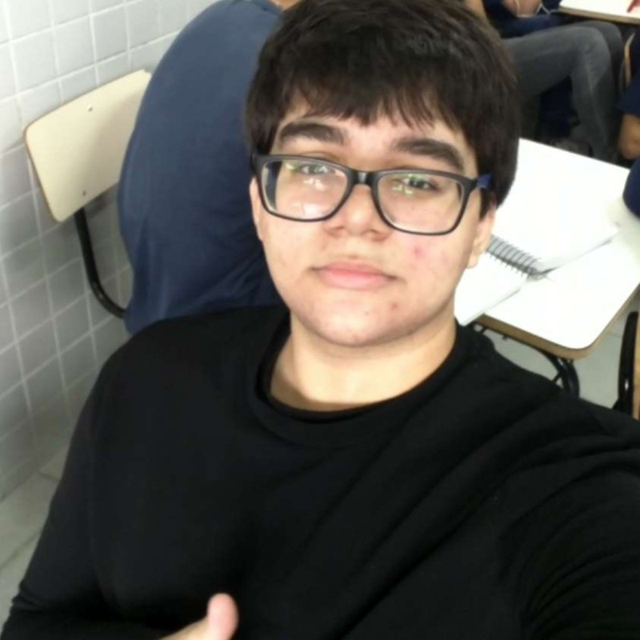

Sobre mim
Meu nome é Zion e desde pequeno sou curioso em relação a tecnologia. Sinceramente o que me motivou a procurar sobre programação inicialmente foi a ideia de poder trabalhar de qualquer lugar, quero poder conhecer o mundo enquanto trabalho. Meu primeiro contato com a programação foi por volta de janeiro de 2025, comprei um curso de Python na internet e me apaixonei. A ideia de poder criar coisas do zero ou resolver problemas me atraiu muito. Eu atualmente estou aprendendo Python e desenvolvimento web, quero no futuro ser um desenvolvedor back-end e ter conhecimento para criar e utilizar IA. Eu espero muito que eu consiga realizar esse meu desejo de ser um desenvolvedor back-end e poder conhecer um pouco do mundo, sei que ainda estou no começo mas sonhar nunca é demais.